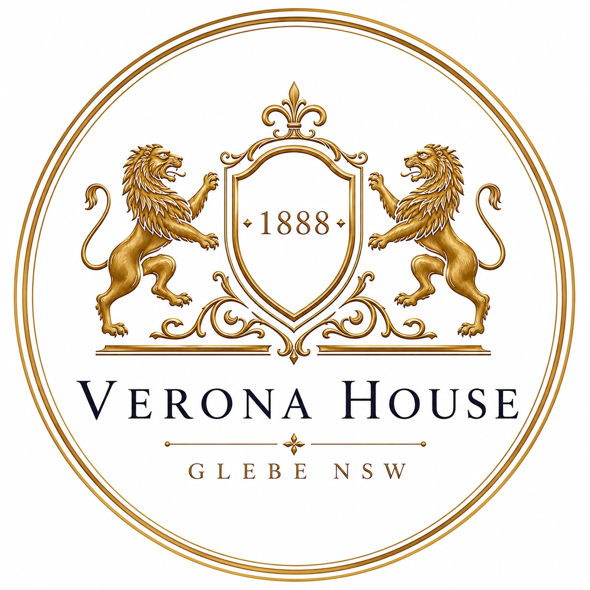
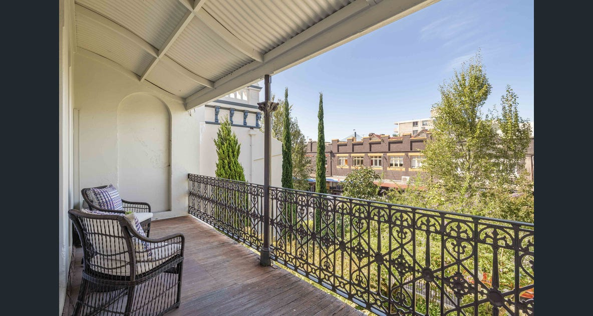
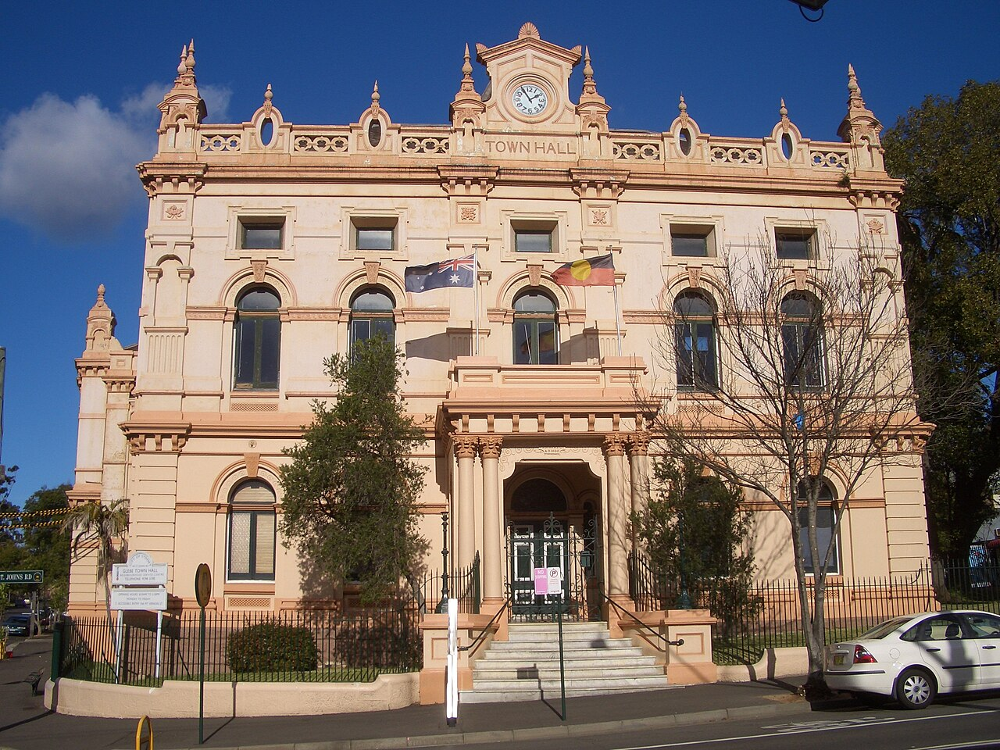
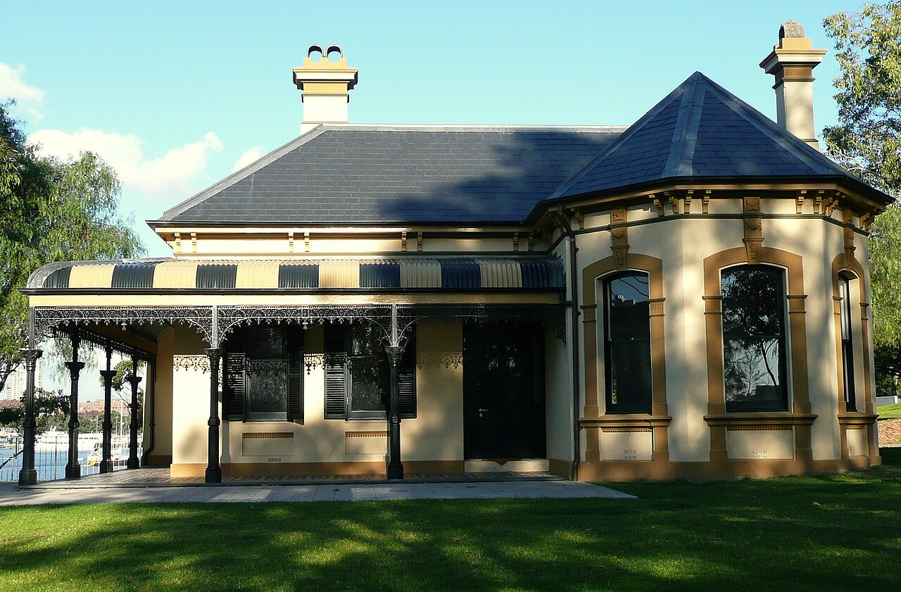
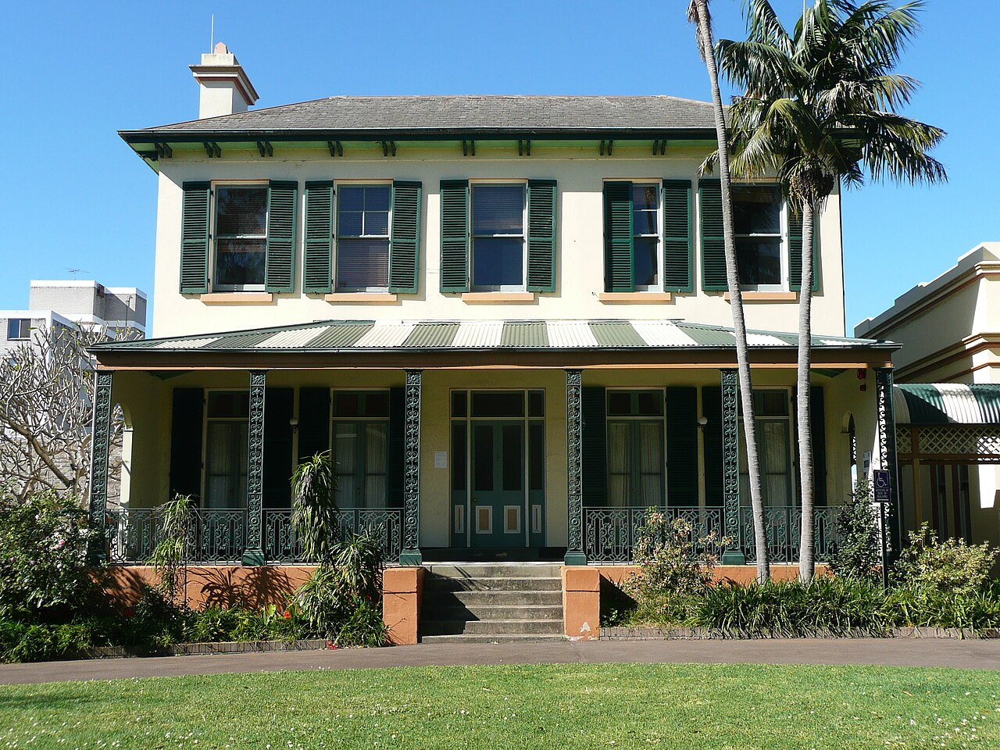
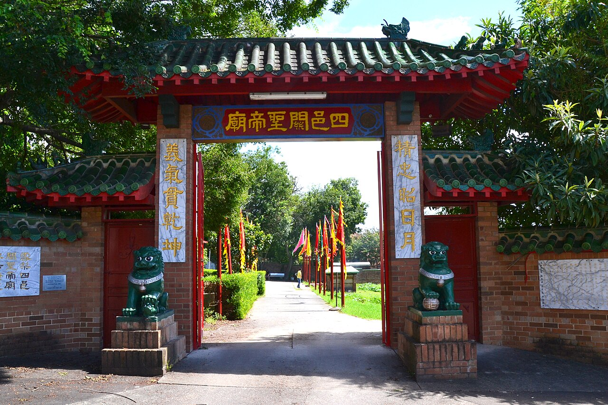

Estates take shape
Land sales open the way for substantial private estates. George Allen’s Toxteth Park house follows in 1829–31.[5]

Verona HouseGlebe · SydneyA self-guided walk through Glebe
A neighbourhood written in sandstone, iron lace and leafy streets. Discover the stories behind the houses—and the little details worth slowing down for.
01 · A place with many stories
Glebe stands on the Country of the Gadigal and Wangal peoples. Aboriginal people lived along its creeks and bays for thousands of years before British colonisation. This is a continuing connection to place.[1]
The name “Glebe” comes from land set aside to support the church. The City of Sydney dates the local grant of 400 acres to the Anglican Church to 1789. From 1828, subdivision began to change the peninsula.[2]
The houses reveal different lives lived side by side: villas in generous grounds, small cottages and tightly gathered terraces. The fashionable northern point contrasted with the working-class south, while timber yards and other industries occupied the waterfront.[3][4]
Look beyond an individual façade and the neighbourhood starts to make sense: the width of a block, a garden setback and a row of shared walls all have a story to tell.
Land sales open the way for substantial private estates. George Allen’s Toxteth Park house follows in 1829–31.[5]
Building gathers pace on the Glebe Estate through the gold-rush decades and the 1880s boom.[6]
Subdivision brings late Victorian and Federation homes, often with details that cross between styles.[7]
The Commonwealth buys the Glebe Estate, enabling rehabilitation of existing housing and protection of its community.[6]
02 · Reading the streetscape
A building’s form tells you how it sits in the street. Its ornament gives clues to the fashions of its time.
Mainly mid–late 19th century
Small-scale houses are as much a part of Glebe as its mansions. A cottage is usually single-storey; a terrace can also be only one storey. Modest homes housed workers, while differences in land leases shaped how densely each part of the Glebe Estate developed.[6]
Look for a low frontage, a compact verandah and a simple roof. “Cottage” describes a house form, not a single architectural style.[4]
Victorian · mid–late 19th century
Terraces share side walls and repeat a rhythm along the street; villas stand apart. Victorian filigree uses ornamental ironwork. Italianate design brings classical influences—arched openings, moulded details and sometimes a tower—to both grand and smaller homes.[4][8]
Look for balcony lace, rendered walls and decorative parapets. Verona House, built in 1888, belongs to this late Victorian story.[9][10]
Federation · c.1890–1915
Federation architecture spans the years around Australia’s federation in 1901. Queen Anne houses often favour red face brick, a prominent gable, timber verandah decoration and a more varied roof silhouette. Terracotta tiles are common, though slate also appears.[8][9]
Look for timber fretwork, leadlight and asymmetry. Around Toxteth, late Victorian and Federation details often mingle in the same house.[7][8]
Dates are a guide, not a test. Styles overlap; older designs continued into later decades, and buildings were altered. A roof or balcony alone cannot establish a construction date. Illustrations show general house forms, not particular Glebe properties.

03 · The pleasure is in the details
You do not need an architectural vocabulary to enjoy Glebe. Start with these four details.
Look low: sandstone often appears in foundations, retaining walls and gateposts as well as whole buildings. Exposed brick is especially characteristic of Federation houses; render gives many Victorian façades a smoother finish. St John’s Bishopthorpe is a local example built in Pyrmont sandstone.[9][3]
“Lace” is the delicate cast-iron ornament on many verandahs and balconies. Trace a repeating leaf or scroll rather than taking in the whole pattern at once. At 35 Arcadia Road, dated 1901, the ironwork includes native ferns, while the pediment carries waratahs and flannel flowers.[11]
A verandah is a roofed outdoor gallery; a balcony projects or opens at an upper level. Compare the narrow verandahs of small terraces with a villa’s broader frontage. In Federation designs, shaped timber posts, brackets and fretwork often take the decorative role of earlier iron lace.[8][9]
A parapet is the wall rising above a roof edge; a gable is its triangular end. Look for chimneys, slate or corrugated-metal roofs, and curved “bullnose” verandah roofs. Arundel Street offers pointed Gothic windows and gables alongside Italianate terraces and quieter single-storey rows.[9][12]
04 · Beyond the front door
Choose a precinct, let the rooflines catch your eye, and leave time for a pause along the way.
Glebe Point Road
At number 224, take in the house’s arched windows and Italianate detailing before heading out. The house dates to 1888: a useful starting point for spotting the late Victorian language elsewhere in Glebe.[10]
Find Verona House on the map ↗Toxteth · Wigram · Arcadia · Avenue roads
Toxteth is a rewarding place to compare eras. On Wigram Road, numbers 30–46 date to about 1893 and have striking projecting iron balconies. On Avenue Road, compare the more Italianate number 19 (1898) with number 21 (1899), with its timber fretwork and patterned brick gable.[13][5]
Follow the Glebe Society’s detailed walk ↗Glebe Estate · Bishopthorpe · Arundel Street
Explore the streets around St Johns Road, Derwent Street and Westmoreland Street for the quieter scale of Glebe’s houses. Extend south to Arundel Street: numbers 47–57 form an early single-storey brick terrace row, a lovely counterpoint to the taller houses nearby.[3][12]
Find Arundel Street on the map ↗Leichhardt Street · Blackwattle Bay · Jubilee Park
The bays once supported timber yards and other industries. Community campaigns helped turn former industrial land into public parks. Bellevue, built in 1896 beside Blackwattle Bay, survived threatened demolition and was restored by the City of Sydney in 2006.[2]
Find Bellevue on the map ↗From a Regency villa to a Chinese temple gateway, Glebe rewards a closer look. These photographs show the buildings in the years noted; the larger dates below mark their construction or origins.

Built in stages to designs by Ambrose Thornley Jnr, the town hall expresses the civic ambition of Victorian Glebe. Look up to the clock and richly ornamented parapet.[3]

The waterfront house brings several of Glebe’s characteristic details together: a projecting bay, prominent chimneys and a shaded verandah edged with iron lace. Its survival is part of the foreshore’s conservation story.[2]

Designed by architect Edmund Blacket as his family home, this Victorian Regency villa pairs a symmetrical façade with shuttered windows, a hipped slate roof and a broad verandah. Look for the decorative ironwork and tall chimney. Its later role as a children’s receiving home gives Bidura particular significance for the Stolen Generations and Forgotten Australians. View respectfully from the public footpath.[15]

The central temple’s origins lie in 1898. Founded by Chinese migrants, the complex has been rebuilt in part after fires. The photograph shows the entrance gateway rather than the central temple.[14]
For our guests
Start at Verona House, 224 Glebe Point Road. Pick the route that suits your curiosity, with a café stop whenever the mood takes you.
Take it at your own pace. Expect slopes, crossings and uneven older footpaths. Wear comfortable shoes and check the linked route before setting off; no step-free route is assumed here.
A living neighbourhood. Most houses are private homes. Enjoy them from public footpaths, keep entrances clear, and follow any visiting or photography guidance at places of worship.
More than beautiful buildings
Glebe’s survival was never only about ornamental façades. Campaigns for the Glebe Estate argued for repairing houses while allowing an established community to remain. The 1974 purchase became an important experiment in urban rehabilitation.[6]
As you walk, enjoy the grand residences and the modest cottages together. The contrast is part of what makes Glebe distinctive: many kinds of homes, and many kinds of lives, within the same neighbourhood.
Historical references checked 11 October 2026. Dates refer to original construction or the stated building phase; they do not imply that every visible feature is original.
A note on dates. The church grant date here follows the City of Sydney (1789); some Glebe Society accounts use 1790. Architectural period labels are approximate and overlap.
Photography & illustrations. The Verona House exterior photograph, balcony photograph and crest are embedded from Verona House’s website. The landmark photographs are by J Bar (Glebe Town Hall, CC BY 2.5), Sardaka (Bellevue and Sze Yup Temple, CC BY 3.0) and Clytemnestra (aka Sardaka) (Bidura, CC BY-SA 3.0), via Wikimedia Commons. Each caption links to its original file and licence. Wikimedia’s reduced-resolution versions are reproduced without further edits and displayed with their full frames. Bellevue’s source file includes the photographer’s 2012 revision of a 2008 photograph. Photo dates identify when the views were recorded, not the buildings’ present condition. The three line drawings are original, schematic illustrations.
More to explore. For archival streetscapes and maps, browse the City of Sydney Historical Atlas and the State Library of NSW collection. These are image research suggestions; check each item’s rights statement before reproducing it.
Your place in the neighbourhood

Bellevue.jpg){kind=link}

Sze_Yup_Temple-1.jpg){kind=link}